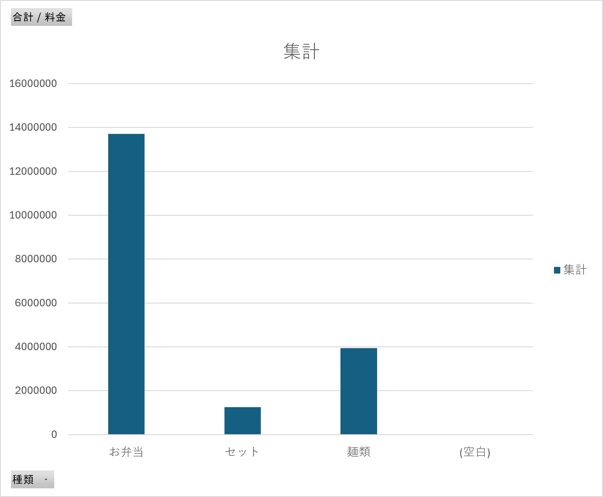
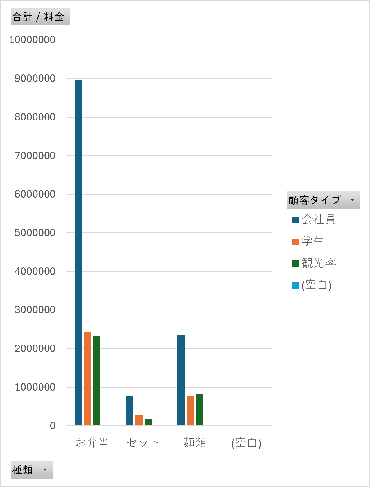
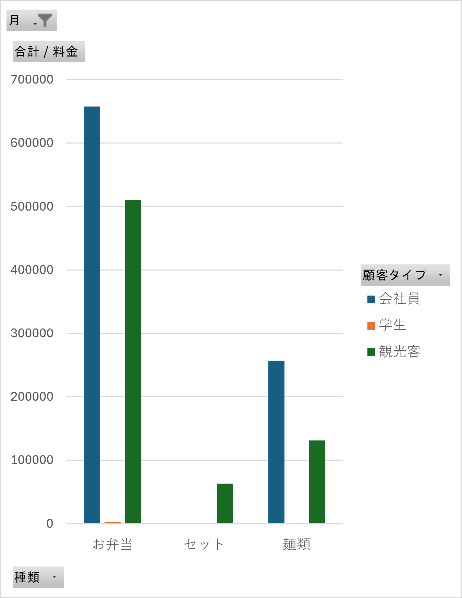

まず、どの種類のものが一番売り上げが高いかを調べてみました。

このグラフから、お弁当が一番売り上げが高く、次に麺類、その次がセットだという事が分かりました。
次に、購買層について調べました。

このグラフから、会社員が圧倒的に多く、学生や観光客が社会人として比較して少ないという事が分かりました
最後に、８月に限定して、どの購買層が一番多いのか調べました。

このグラフから、会社員と観光客が多く、学生がほぼ買っていないという事が分かりました。
また、セットに関しては観光客しかほぼ買っていないという事が分かりました。